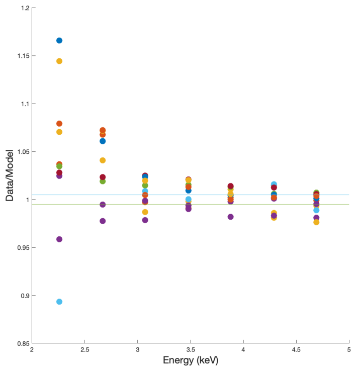
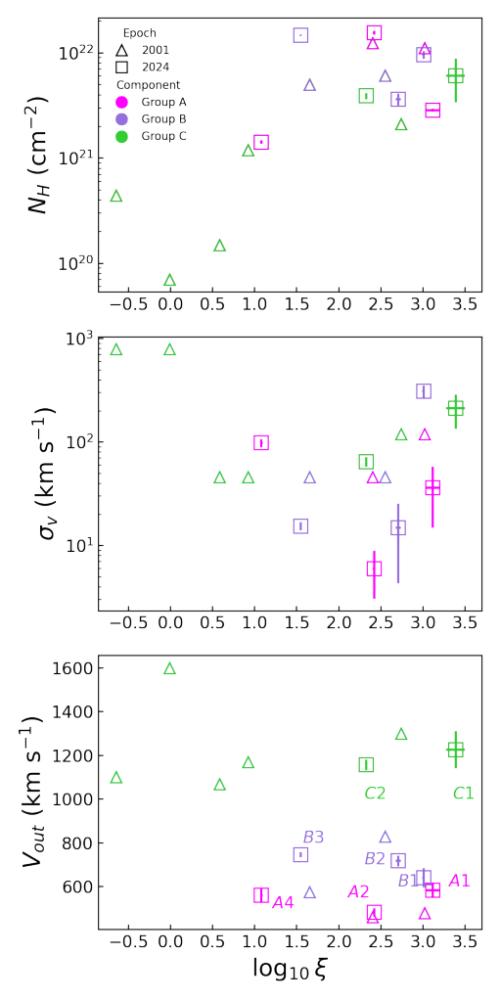
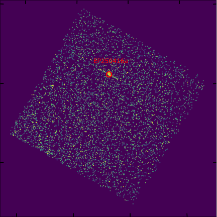
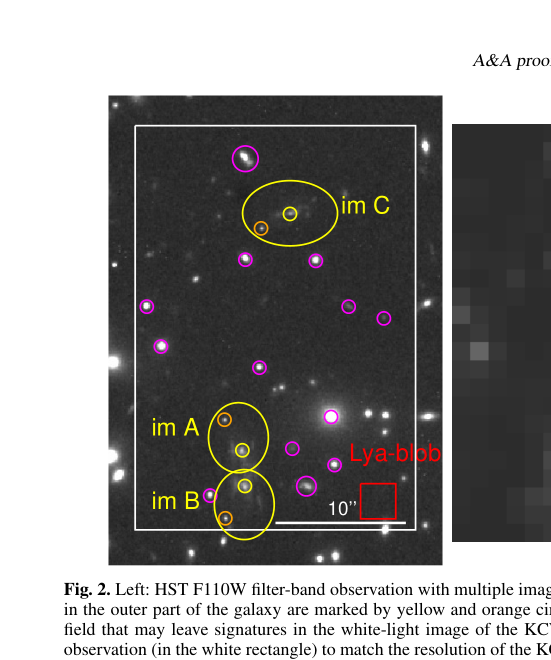
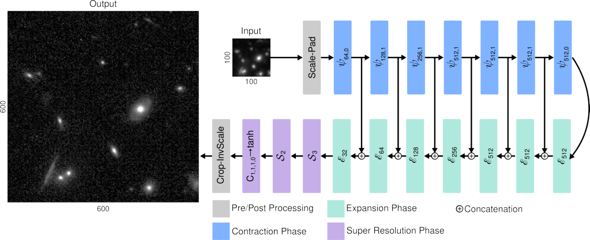
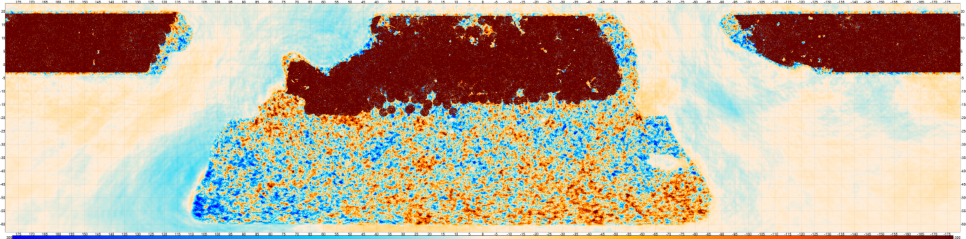
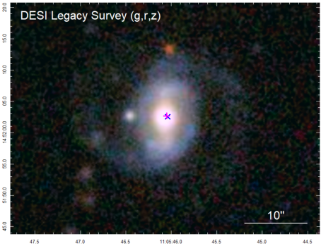
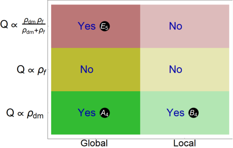

Galaxies
Constraining primordial non-Gaussianity via its scale-dependent imprint on galaxy clustering requires knowledge of the bias parameter $b_φ$, which is exactly degenerate with $f^{\rm{loc}}_{\rm{NL}}$ at leading order.…

No papers in today's selection for this topic.
Constraining primordial non-Gaussianity via its scale-dependent imprint on galaxy clustering requires knowledge of the bias parameter $b_φ$, which is exactly degenerate with $f^{\rm{loc}}_{\rm{NL}}$ at leading order.…

The Seyfert 1 galaxy NGC 3783 hosts a multiphase warm absorber (WA) that has been extensively studied in the X-ray band. High-resolution spectra from 2000-2001 revealed a complex outflow with multiple ionization and velocity components.…
The distribution of galaxies, halo abundance, and peculiar velocities are influenced by non-linear gravitational interactions, making the study of non-linear evolution crucial for accurate cosmological predictions. We explore these aspects using N-body simulations.…

We present multi-wavelength study of the $γ$/X-ray transient EP250416a (also designated GRB 250416C), triggered by the Einstein Probe (EP) Wide-field X-ray Telescope and also by SVOM and Konus-Wind.…

Low-resolution spectrographs used to have difficulties to determine redshifts of galaxies at $z\approx1$ and $z\approx3$. Spectral emission and absorption lines of magnesium and iron redshifted to $z\approx1$ fall close to hydrogen, silicon, and oxygen lines at $z\approx3$.…

The measurement of galaxy morphological parameters from astronomical images features in a wide range of modern analyses, including galaxy evolution and cosmological weak lensing studies. The precision and accuracy of morphological parameter estimation can be influenced by several key factors.…

We present the first high-significance spectroscopic stacked kinetic Sunyaev-Zel'dovich (kSZ) measurements of circumgalactic gas profiles for both Bright Galaxy Survey (BGS) and Emission Line Galaxy (ELG) tracers, combining DESI Data Release 2 with ACT Data Release 6.…

SDSSJ110546.07+145202.4 stands out as a unique radio changing-look Narrow-line Seyfert 1 (NLS1) galaxy that has brightened dramatically and shows an exceptionally long duration of its "on" phase.…

This article opens new window to obtain accelerating scaling attractors without any need of dark energy. We study cosmological dynamics in a two-fluid system where pressureless dark matter (DM) undergoes adiabatic particle creation and exchanges energy with a barotropic fluid.…
We introduce a family of phenomenological cosmological models featuring an interacting dark sector modulated by a sparseness scale parameter, in order to describe the late-time accelerated expansion of the universe.…
We have considered the problem of the influence of inhomogeneity of gravitational field on transport effects predicted by the field theory describing massless Dirac fermions in the Maxwell and dark matter background.…
Dark matter search strategies have started advancing towards the neutrino fog. In this regard, compact objects such as neutron stars have already demonstrated their ability in probing such low DM-nucleon cross-sections from dark matter induced effects.…